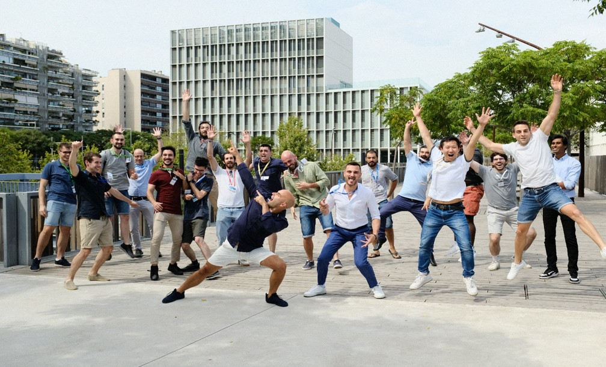

SOLIS Kick-off Meeting Successfully Completed
📅 November 2024 | 📍 Barcelona, Spain
The SOLIS consortium held its inaugural kick-off meeting at Universitat Politècnica de Catalunya in Barcelona, bringing together researchers from all eight partner institutions. The two-day event featured presentations from each partner on their expertise and planned contributions, detailed discussions of the secondment program, and coordination of Work Package activities.
Key outcomes included finalization of the project's Data Management Plan, approval of the Gender Equality Action Plan, and establishment of communication protocols. Partners also demonstrated preliminary results on kesterite and selenium-based visual synapses, confirming the project's strong scientific foundation.

First Secondment: UPC Researcher to University of Liverpool
📅 December 2024 | 📍 Liverpool, UK | ⏱️ 3 months
Dr. Maria González, an early-stage researcher from UPC, has begun a three-month secondment at the University of Liverpool's Stephenson Institute for Renewable Energy. The visit focuses on advanced characterization of antimony selenide (Sb₂Se₃) solar cells using Deep Level Transient Spectroscopy (DLTS) to map metastable defects responsible for persistent photoconductivity.
"This collaboration allows us to apply Liverpool's world-class DLTS facilities to understand the fundamental physics behind synaptic behavior in thin-film devices," said Dr. González. "The expertise here in defect spectroscopy is unparalleled, and we're already seeing fascinating results on trap state dynamics."
The secondment is part of WP3 (Solar Cell-Inspired Synapses) and will generate crucial data for device modeling efforts in WP2.

Workshop W1: Foundations of Inorganic Thin Film Synapses
📅 January 2025 | 📍 Rabat, Morocco
SOLIS will host its first thematic workshop at MAScIR Foundation in Rabat, coinciding with the 12-month project meeting. The workshop will explore fundamental principles of inorganic thin-film synapses, bringing together consortium members and invited external experts.
Planned topics include:
- Memristive behavior in photovoltaic materials
- Persistent photoconductivity mechanisms
- Synaptic plasticity functions (STP, LTP, STDP, SRDP)
- From solar cells to artificial synapses: challenges and opportunities
- Characterization methodologies for optical memristors
The workshop will be open to participants beyond the consortium, with recordings and presentations made available via the project website. Registration details will be announced in December 2024.

Open-Source Characterization Platform Development Progresses
📅 October 2024 | 📍 Multiple Locations | 🎯 WP1
Partners in WP1, led by the University of Liverpool, have made significant progress in developing the open-source characterization platform for visual synapses. The platform, designed to be accessible to photovoltaic laboratories with standard equipment, combines waveform generators, oscilloscopes, and precision multimeters with custom Python software for automated device testing.
"Our goal is to democratize access to synaptic device characterization," explained Dr. James Thompson, WP1 coordinator. "Rather than requiring expensive specialized equipment, we're showing that researchers can evaluate their devices as visual synapses using instruments they already have."
Beta testing of the platform is underway at UPC, TalTech, and UniVerona. Full documentation and software will be released as Deliverable D1.1 (M10) and D1.2 (M12) via GitHub and Zenodo.
Breakthrough: Flexible Piezophototronic Synapses Demonstrated
📅 September 2024 | 📍 Kyoto, Japan
Researchers from Ritsumeikan University, in collaboration with UPC, have successfully demonstrated flexible piezophototronic synapses that respond to both optical and mechanical stimuli. The devices, based on ZnMgO/Se photodiodes fabricated on polyimide substrates, show tunable synaptic plasticity through mechanical bending.
The breakthrough enables a unique reset mechanism: accumulated photo-memory can be erased either through electrical bias or mechanical strain, opening new possibilities for adaptive learning systems in soft robotics and wearable electronics.
These preliminary results, obtained prior to the official project start, validate the ambitious goals of WP4 (Visual Synapses Beyond Photodiodes) and set the stage for extensive development during the project.
Electrochemical Studies Reveal Interface Dynamics in Kesterite Synapses
📅 August 2024 | 📍 Cape Town, South Africa
University of Western Cape researchers have applied advanced electrochemical techniques to study interfacial charge transfer processes in kesterite-based visual synapses. Using Electrochemical Impedance Spectroscopy (EIS) and photoelectrochemical measurements, the team identified specific surface states that contribute to synaptic behavior.
"Electrochemistry provides unique insights into interface-controlled processes that are difficult to probe with purely electrical methods," noted Prof. Lindiwe Khotseng, lead investigator. "We're seeing clear evidence that interface defects play a crucial role in persistent photoconductivity and memory effects."
These findings will inform interface engineering efforts in WP4, particularly the development of selective contacts for enhanced synaptic performance.
DFT Calculations Predict Novel Defect-Engineering Strategies
📅 July 2024 | 📍 Barcelona, Spain | 🎯 WP2
Computational materials researchers at UPC have completed comprehensive Density Functional Theory (DFT) calculations on metastable defects in chalcogenide absorbers. The simulations predict how specific defects can be intentionally engineered to enhance synaptic plasticity rather than suppressed as in traditional solar cell optimization.
Key findings include identification of defect complexes that exhibit light-activated bistability, providing a physical mechanism for long-term potentiation. The calculations also suggest compositional modifications that could tune the time constants of synaptic decay, enabling materials tailored for specific learning tasks.
These theoretical predictions will guide experimental efforts in WP3 and inform the development of the synaptic network simulation tool (Deliverable D2.1).
SOLIS Participates in EU-COST RENEWPV Annual Meeting
📅 June 2024 | 📍 Tallinn, Estonia
SOLIS consortium members presented project objectives and preliminary results at the EU-COST Action RENEWPV annual meeting, hosted by TalTech in Tallinn. The presentation highlighted how RENEWPV's focus on emerging photovoltaic materials directly enables new applications in neuromorphic computing.
The presentation sparked considerable interest from the broader PV community, with several RENEWPV members expressing interest in evaluating their own materials as visual synapses once the open-source characterization platform becomes available.
This alignment between SOLIS and RENEWPV objectives creates valuable synergies, extending the impact of both initiatives and fostering broader adoption of the thin-film synapse concept.
Upcoming: Three-Terminal Synapse Development at NIP
📅 Planned Q2 2025 | 📍 Quezon City, Philippines
The National Institute of Physics will host multiple secondments focused on developing planar three-terminal synapses using molecular beam epitaxy (MBE) grown GaAs structures. The innovative architecture incorporates a gate terminal that can modulate synaptic weight through carrier accumulation, mimicking neuromodulation in biological synapses.
This work represents a significant departure from simple two-terminal photodiodes, offering independent control of memory storage and synaptic transmission. The high-quality crystalline materials from MBE provide an ideal platform for controlled studies without the complexity of polycrystalline thin-film interfaces.
Results from this work package are expected to lead to at least one patent application (Deliverable D4.3).
Gender Equality and Open Science at the Core of SOLIS
📅 Ongoing | 🎯 Project-wide initiative
SOLIS is committed to promoting gender equality and open science throughout its activities. The project's Gender Equality Action Plan ensures:
- Minimum 35% women in secondment positions
- Equal opportunity access to training and career development
- Gender-balanced workshop speakers and panels
- Monitoring and reporting of gender statistics
On the open science front, SOLIS commits to:
- >50% publications in open access journals
- All data and metadata on Zenodo repository
- Open-source software on GitHub
- Detailed methodology documentation for reproducibility
These principles align SOLIS with EU priorities and ensure maximum societal impact of project results.